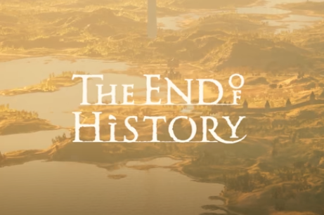

🎮 “The End of History”: estratégia, combate e alma de RPG com decisões que mudam a história
O jogador entra em um mundo aberto numa Europa feudal fictícia, onde decisões, alianças, traições e guerras determinam o destino de uma sociedade à beira do colapso.